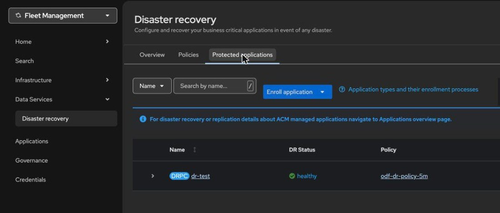

Regional DR between two clusters
By the end you can say what the three clusters of Regional DR do, read the object that protects a VM, and say what a failover loses.
Northgate Freight is a made-up company. Its order database cannot wait for a restore from backup. Regional DR is the design the tutorials build for that.
Every command, output and fact in this unit comes from tutorial chapters 53 and 79 to 83, run on test clusters. All of them were in one region, so the loss of a region was not shown. The review question repeats one from unit 2.2.
The object that protects a VM
This DRPlacementControl, the DRPC, lives on the hub. It decides what is protected and where it runs. Select a part of the drawing to see what it does and which lines define it. You can also click a line.
Where it runs
The preferred cluster is where the VM runs now. A Placement names the cluster, and it must carry the experimental-scheduling-disable annotation from the moment it is created. Without it, RHACM schedules its own decision and Ramen rejects it with multiple placements found.
Policy
The DRPolicy pairs the two clusters and sets the replication interval, 5 minutes here. Replication is snapshot-based and asynchronous, so the window of data loss is proportional to the interval. Red Hat documents a one-minute minimum. The interval is fixed once the policy is created.
From vSphere: the closest pair is SRM with vSphere Replication. This is an approximate mapping, not an IBM statement.
What is protected
The disks in the named namespace whose label matches. Each disk replicates through a VolumeGroupReplication, which is grouped RBD mirroring, not VolSync.
Watch for this. Protection is per namespace by default. Put twenty VMs in one namespace and protect one, and you have protected all twenty, and you will fail over all twenty. The VM must also be Running before you protect it.
The VM definition
Ramen saves the VM's definition through Velero, from the OADP operator, every 5 minutes. Without OADP the volumes replicate and the VM definitions do not. A VM made with oc apply or the console is a discovered application.
Watch for this. For a discovered VM you label every object by hand: the VirtualMachine, DataVolume, PVC, Service, Route, Secret and ConfigMap. A missed Secret or ConfigMap fails silently. You find out at failover.
apiVersion: ramendr.openshift.io/v1alpha1
kind: DRPlacementControl
metadata: {name: dr-test, namespace: openshift-dr-ops}
spec:
preferredCluster: <your-cluster>
drPolicyRef: {name: odf-dr-policy-5m}
placementRef: {kind: Placement, name: dr-test-placement, namespace: openshift-dr-ops}
protectedNamespaces: [dr-test]
pvcSelector:
matchExpressions: [{key: app, operator: In, values: [dr-test]}]
kubeObjectProtection:
captureInterval: 5m
kubeObjectSelector:
matchExpressions: [{key: app, operator: In, values: [dr-test]}]
Is it protected, and is it copying?
Two checks the chapter makes after it creates the DRPC. Commit to an answer first.
You create the DRPC for a one-disk VM. About how long until it reaches Protected?
Show the answer
About 75 seconds on the test cluster, for a one-disk VM. Run the command on the hub to see the result.
# on the hub
KUBECONFIG=$KC_HUB oc get drpc dr-test -n openshift-dr-ops -o jsonpath='{.status.phase} {.status.conditions[?(@.type=="Protected")].status} sync={.status.lastGroupSyncTime}{"\n"}'
Deployed True sync=2026-09-24T12:05:05Z
Deployed, Protected is True, and the last group sync has a time.
That last field is the one to watch later.
You run the mirroring check on a ROVS cluster that has no DR configured. What does the field show?
Show the answer
Mirroring is unset until DR is set up, so the field is empty. The command below ran on a managed cluster after setup.
# on each managed cluster: the one to alert on
oc get cephblockpool ocs-storagecluster-cephblockpool -n openshift-storage -o jsonpath='{.status.mirroringStatus.summary}{"\n"}'
{"daemon_health":"OK","health":"OK","image_health":"OK","states":{}}
Three health fields, all OK.
Your recovery point depends on this replication being healthy.
Find the protected VM on the hub
This is a real screen from the hub of the test build. Click where you would click. After two misses the right place is marked.

You are on the hub's Disaster recovery page. Which tab lists the protected applications?
Show where
Right. Protected applications. It sits next to Overview and Policies.
Where does the console show the application's DR status?
Show where
Right. DR Status, here healthy. Chapter 80 records the DRPC reporting Protected=True through every outage in its test, so also watch the last sync time.
Which button attaches a policy to another application?
Show where
Right. Enroll application. For a discovered VM you still label its objects first.
What a failover costs, and what to watch
The first two answers come from a VM on a 5-minute policy, failed over from production to the DR cluster and relocated back. All the clusters were in one region.
A marker line is written before a mirror sync. A second line is written two minutes after it. You fail over. What is in the marker file on the DR cluster?
Show the answer
The VM was Running on the DR cluster 81 seconds after the failover was requested. The line written two minutes after the sync was gone. That is the loss a 5-minute interval allows. The DRPC then stops at WaitOnUserToCleanUp: for a discovered application you delete the VM, and every disk it does not own, on the old primary.
Later you relocate the VM back after writing on the DR cluster. What is lost?
Show the answer
Relocate is the planned move home. The line written on the DR cluster was intact on production. The VM was Running there about 2 minutes 15 seconds after the relocate began. Failover, cleanup and relocate together took twelve minutes.
Design it. Northgate wants a 5-minute recovery point for tier-one VMs and 1 hour for the rest. What do you create?
Show the answer
A policy's interval is fixed once created. To offer more than one tier, create more than one DRPolicy, for example eu-de-us-east-5m and eu-de-us-east-1h. Decide the tiers before you create the first policy.
Spot the fault. The hub shows Protected=True, but the last sync time is far older than the interval. What do you trust?
Show the answer
In the lab, the DRPC kept reporting Protected=True while replication had stopped. Run oc get drpc -A -o custom-columns=NAME:.metadata.name,LAST_SYNC:.status.lastGroupSyncTime on the hub and compare with your interval. The chapter records no output for that command. Alert on the sync time, not on the condition.
Four questions
The primary region is unavailable. Does the VM fail over by itself?
Show the answer
Failover is an explicit administrator action. You set action and failoverCluster on the DRPC, or use the console buttons. The recovered disk is crash-consistent, closer to a vSphere host power cut than to a quiesced snapshot, so a test starts the application and checks it.
What runs on the hub, the third cluster?
Show the answer
The hub orchestrates both managed clusters and needs no bare metal. The whole design is a second cluster, a hub and an RHACM licence, running all the time, and the DR stack is yours to update.
A VM's disk was made from a golden-image DataSource by a snapshot clone. Does it replicate?
Show the answer
RBD mirroring cannot be enabled on a clone until it is flattened. In the run, a second VM with its disk imported from a registry was protected within two minutes of the DRPC.
Review question from Unit 2.2. Which storage class do you use for every VM disk?
Show the answer
On the test clusters, a VM on that class was protected with no second class needed. Its disks were ReadWriteMany with Block.
You can read a Regional DR setup
Three clusters: two with ODF, one hub. The DRPC says what is protected and where it runs. Failover is a human action and loses up to one interval. Watch the last sync time, not the Protected condition.
Tutorial chapter 53, Choose a disaster recovery design for ROVS VMs, compares the designs and links the four build parts, chapters 79 to 82. Chapter 83 has the known problems.